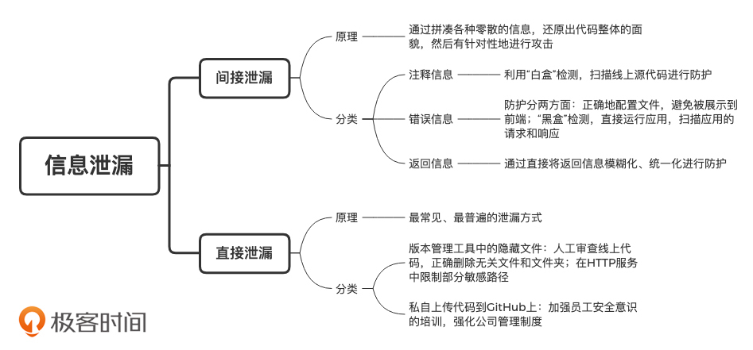

- 00 开篇词 别说你没被安全困扰过.md
- 01 安全的本质：数据被窃取后，你能意识到问题来源吗？.md
- 02 安全原则：我们应该如何上手解决安全问题？.md
- 03 密码学基础：如何让你的密码变得“不可见”？.md
- 04 身份认证：除了账号密码，我们还能怎么做身份认证？.md
- 05 访问控制：如何选取一个合适的数据保护方案？.md
- 06 XSS：当你“被发送”了一条微博时，到底发生了什么？.md
- 07 SQL注入：明明设置了强密码，为什么还会被别人登录？.md
- 08 CSRF_SSRF：为什么避免了XSS，还是“被发送”了一条微博？.md
- 09 反序列化漏洞：使用了编译型语言，为什么还是会被注入？.md
- 10 信息泄露：为什么黑客会知道你的代码逻辑？.md
- 11 插件漏洞：我的代码看起来很安全，为什么还会出现漏洞？.md
- 13 Linux系统安全：多人共用服务器，如何防止别人干“坏事”？.md
- 14 网络安全：和别人共用Wi-Fi时，你的信息会被窃取吗？.md
- 15 Docker安全：在虚拟的环境中，就不用考虑安全了吗？.md
- 16 数据库安全：数据库中的数据是如何被黑客拖取的？.md
- 17 分布式安全：上百个分布式节点，不会出现“内奸”吗？.md
- 18 安全标准和框架：怎样依“葫芦”画出好“瓢”？.md
- 19 防火墙：如何和黑客“划清界限”？.md
- 20 WAF：如何为漏洞百出的Web应用保驾护航？.md
- 21 IDS：当黑客绕过了防火墙，你该如何发现？.md
- 22 RASP：写规则写得烦了？尝试一下更底层的IDS.md
- 23 SIEM：一个人管理好几个安全工具，如何高效运营？.md
- 24 SDL：怎样才能写出更“安全”的代码？.md
- 25 业务安全体系：对比基础安全，业务安全有哪些不同？.md
- 26 产品安全方案：如何降低业务对黑灰产的诱惑？.md
- 27 风控系统：如何从海量业务数据中，挖掘黑灰产？.md
- 28 机器学习：如何教会机器识别黑灰产？.md
- 29 设备指纹：面对各种虚拟设备，如何进行对抗？.md
- 30 安全运营：“黑灰产”打了又来，如何正确处置？.md
- 加餐1 数据安全：如何防止内部员工泄露商业机密？.md
- 加餐2 前端安全：如何打造一个可信的前端环境？.md
- 加餐3 职业发展：应聘安全工程师，我需要注意什么？.md
- 加餐4 个人成长：学习安全，哪些资源我必须要知道？.md
- 加餐5 安全新技术：IoT、IPv6、区块链中的安全新问题.md
- 模块串讲（一）Web安全：如何评估用户数据和资产数据面临的威胁？.md
- 模块串讲（三）安全防御工具：如何选择和规划公司的安全防御体系？.md
- 模块串讲（二）Linux系统和应用安全：如何大范围提高平台安全性？.md
- 结束语 在与黑客的战役中，我们都是盟友！.md
10 信息泄露：为什么黑客会知道你的代码逻辑？
你好，我是何为舟。
你平时在Debug的时候，一定首先会去查看错误信息。根据错误信息，你能够了解究竟是什么情况引发了什么样的错误。同样地，黑客也能够通过错误信息，推断出你的后台代码逻辑。那么，黑客究竟是怎么做的呢？接下来，我们就一起看一下这个过程。
为什么错误信息会泄露代码逻辑？
当黑客在登录某个页面时，在用户名位置输入一个单引号，在密码位置输入一个“g”之后，就会出现如下的错误信息。
An Error Has Occurred.
Error Message:
System.Data.OleDb.OleDbException: Syntax error (missing operator) in query expression 'username = ''' and password = 'g''. at
System.Data.OleDb.OleDbCommand.ExecuteCommandTextErrorHandling ( Int32 hr) at
System.Data.OleDb.OleDbCommand.ExecuteCommandTextForSingleResult ( tagDBPARAMS dbParams, Object& executeResult) at
从这个错误信息中，我们可以看到，网页最终执行了一个SQL语句，这个SQL语句的部分内容为username = ''' and password = 'g'。因此，后台的大致逻辑应该是下面这样的。
第一，错误信息反馈的是Syntax error，即语法错误。在密码位置输入单个字母“g”肯定不会引起错误，所以，这个SQL语句是因为多了一个单引号导致的报错。而如果使用了PreparedStatement等方法，是不会产生这个错误的。因此，后台的SQL查询应该是直接采用的字符串拼接，且没有过滤单引号。
第二，错误信息中显示了部分的WHERE条件是username = '' and password = ''。这又是一个登录的逻辑，所以，只要用户名和密码正确，这个SQL语句会返回黑客需要的用户信息。因此，后台的SQL语句应该是形如select from where的格式。
根据这些信息，黑客很容易就可以发起SQL注入攻击了。
那错误信息中包含的敏感信息这么多，怎么避免被直接展示到前端呢？我们可以通过正确地配置文件，来进行合适的错误处理。比如，在PHP中，我们可以进行如下配置：
error_reporting = E_ALL ;向PHP报告发生的每个错误
display_errors = Off ;不显示满足上条指令所定义规则的所有错误报告
log_errors = On ;决定日志语句记录的位置
log_errors_max_len = 1024 ;设置每个日志项的最大长度
error_log = /var/log/php_error.log ;指定产生的错误报告写入的日志文件位置
在Java Spring中，我们也可以通过配置ExceptionHandler等来进行处理。
避免错误信息泄露代码逻辑，一方面是要通过正确地配置文件，避免错误信息被展示到前端；另一方面是要对错误信息进行检测，这里就需要用到“黑盒”检测了。
所谓“黑盒（Black Box Testing，功能测试）”，就是在不获取代码的情况下，直接运行应用，然后对应用的请求和响应进行扫描。比如，在错误信息泄露的场景中，“黑盒”检测可以向应用发起一些必然会导致错误的请求（比如上述例子中的单引号），然后观察应用是返回完整的错误日志，还是返回某些经过处理的页面。
好了，现在你应该明白了，为啥错误信息会泄露代码逻辑。实际上，错误信息泄露属于一种间接的信息泄露方式。间接的信息泄露方式主要是通过拼凑各种零散信息，还原出代码整体的面貌，然后有针对性地发起攻击。所以我们常说，黑客的攻击本身就是一个“聚沙成塔”的过程。
除了错误信息，还有什么地方会泄露代码逻辑？
除了错误信息之外，间接的信息泄露方式还有两种：返回信息泄露和注释信息泄露。
注释信息你应该很熟悉。因为所有的前端代码基本都不需要编译就可以展示在浏览器中，所以黑客很容易就可以看到前端代码中的注释信息。但是，如果这些注释信息中出现服务器IP、数据库地址和认证密码这样的关键信息。一旦这些关键信息被泄露，将会造成十分严重的后果。
那该如何避免关键的注释信息出现在线上的代码中呢？我们经常会使用一种叫作“白盒”的代码检测方法。
所谓“白盒（White Box Testing，结构测试）”，即直接获取到线上的源代码，然后对它进行扫描。“白盒”扫描注释信息的原理比较简单，因为每一种语言的注释都会带有特殊的标记（比如Java和PHP中的/*等），可以比较准确地被识别出来。除此之外，“白盒”检测通常还会被用来做一些检测代码漏洞或者逻辑漏洞的工作，这一块比较复杂，现在你只需要有一个大概印象即可，我们会在后续的课程中专门来讲。
简单了解了注释信息泄露，我们下面重点来看返回信息泄露。
你可以回忆一下，在前面讲SSRF攻击的时候，我们模拟过这样一个场景：服务端在请求一个图片地址的时候，会根据地址的“存活”情况和返回数据的类型，分别返回三种结果：“图片不存在”“格式错误”以及图片正常显示。而黑客正是通过服务端返回信息的逻辑，利用一个请求图片的SSRF，摸清整个后端服务的“存活情况”。
类似的多种返回状态的场景还有很多，你可以想想自己平时工作中有没有遇到过。这里我再说一个常见的。当你在登录应用的时候，应用的返回逻辑可能是这样的：如果输入的用户名和密码正确，则登录成功；如果应用没有这个用户，则返回“用户名不存在”；如果输入的用户名和密码不匹配，则返回“密码错误”。
尽管这样清晰的登录提示对于用户体验来说，确实是一个较优解，但这个逻辑同样也暴露了过多的信息给黑客。黑客只需要不断地发起登录请求，就能够知道应用中存在的用户名，然后通过遍历常见的弱密码进行尝试，很容易就能够猜对密码。这样一来，猜对密码的成功率就比尝试同时猜测用户名和密码要高很多。
实际上，返回信息过于明确不算是代码层面的漏洞，更多的是产品层面的漏洞。因此，理论上没有任何技术手段能够对这种漏洞进行检测，只能依靠人为的分析审计来避免。解决方案也比较简单，直接将返回信息模糊化、统一化即可。比如，在上述登录的场景中，我们可以将两种登录失败的返回信息，统一修改为“用户名不存在或密码错误”。这样一来，既避免了用户体验受到太大影响，又消除了关键信息被黑客获取的隐患。
有哪些常见的直接泄露方式？
在间接的泄露方式中，黑客可以通过“蛛丝马迹”，推断出服务代码的逻辑。但是信息泄露最普遍的方式还是直接泄露 。这里我会讲两种常见的直接泄露方式。
第一种泄露方式与版本管理工具中的隐藏文件有关。
在开发应用的过程中，你一定使用过版本管理工具（比如SVN和Git），通过这些工具，你能够很方便地进行代码回滚、备份等操作。那你有没有想过，版本管理工具为什么这么方便呢？它的工作原理又是怎么样的呢？我们以SVN为例来说一说。
SVN会在项目目录中创建一个.svn文件夹，里面保存了应用每一个版本的源文件信息，这也是SVN实现代码回滚的数据基础。如果SVN可以通过.svn中的数据提取应用任意版本的代码，那黑客也可以。只要你没有在上线代码的时候删除其中的.svn目录，那就代表黑客可以通过.svn中的URL访问里面的所有文件。接下来，只需要通过执行简单的脚本，黑客就可以回溯出一个完整版本的代码了。
对于这种因为目录中额外内容（.svn/.git）导致的源码泄露，我们一方面需要对线上代码进行人工的代码审查，确保无关的文件和文件夹被正确地清除；另一方面，我们也可以在HTTP服务中对部分敏感的路径进行限制。比如，在Apache httpd中配置下面的内容，来禁止黑客对.svn和.git目录的访问。
<DirectoryMatch \.(svn|git)>
Order allow,deny
Deny from all
</DirectoryMatch>
除此之外，还有一种最常见、也最不容易注意的泄露方式，那就是上传代码到GitHub上。
我们知道，Git除了是一个版本管理工具之外，还是一个很流行的代码管理工具。除了前面讲过的隐藏文件漏洞之外（Git会生成.git，同样包含应用各种版本的文件信息），Git还存在将代码上传到公开平台的问题。但是，使用GitHub上传代码通常属于个人行为，所以，我们很难从技术层面上进行预防。
那我们有没有一些有效的防护措施，可以尽可能地提高安全性呢？
我个人认为，公司应该从加强员工安全意识的培训、强化公司管理制度入手，避免员工私自上传代码。除此之外，公司还可以对GitHub发起巡检（比较知名的工具有Hawkeye），通过定期检索公司代码的关键字（比如常用的包名、域名等）来进行检测。通过这些方式匹配到的结果，很可能就是员工私自公开的代码。确认之后，我们就可以联系上传的人员进行删除了。
总结
好了，今天的内容讲完了。我们来一起总结回顾一下，你需要掌握的重点内容。
信息泄露这类漏洞很容易理解，但它能够造成的危害却不容小觑。基本上，所有攻击的第一步都是从信息泄露开始的。而且黑客没有办法攻击一个未知的系统，所以黑客会通过这些泄露的信息，去推断出应用的整体架构和逻辑。
信息泄露的方式和原因有很多，这其中，除了黑客主动发起攻击导致的信息泄露之外，有很多非技术原因导致的信息泄露。所以，相应的防护手段也比较零散。不过总体来说，我们可以从以下几个方面进行防护：
- 屏蔽信息：通过技术手段，将不该被访问的资源进行屏蔽，从而避免信息泄露的产生；
- 代码检测：从“白盒”和“黑盒”两个方向，对代码、应用等进行检测，对可能的泄露进行预警；
- 人工审计：对于非技术原因造成的泄露，加强人工审计的工作。同时从公司制度上，去提高员工的安全意识。
今天的内容虽然比较简单，但是为了方便你记忆，我还是总结了一张知识脑图，你可以利用它来查缺补漏，加深记忆。

思考题
最后给你留一个思考题。
通过今天的讲解，你可以回忆一下，你的公司或者你负责的应用当中，是否发生过类似的信息泄露事件呢？如果发生过，对你的公司或者应用都造成了什么影响呢？最后又是如何解决的呢？
欢迎留言和我分享你的思考和疑惑，也欢迎你把文章分享给你的朋友。我们下一讲再见！
© 2019 - 2023 Liangliang Lee. Powered by gin and hexo-theme-book.